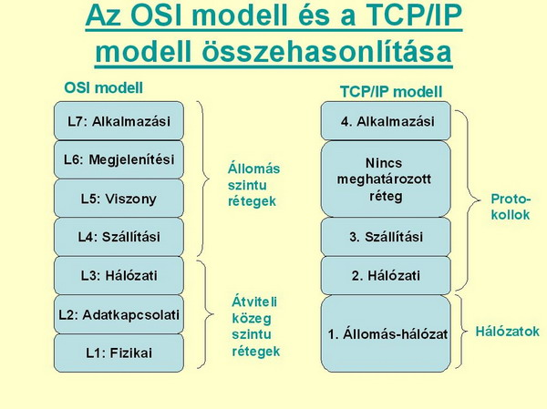

Az OSI (Open Systems Interconnection) modell egy hét rétegből álló referencia-modell, amely a számítógépes hálózatok kommunikációját különböző feladatokra bontja.
A modell rétegei az alkalmazási, megjelenítési, viszony, szállítási, hálózati, adatkapcsolati és fizikai réteg.
Az OSI modell segítségével könnyebben megérthető, hogyan történik az adatok továbbítása a hálózaton keresztül, illetve melyik réteg milyen feladatot lát el.
Az OSI modell elsősorban referencia- és oktatási célokra használatos, míg a gyakorlatban az interneten a TCP/IP modellhez kapcsolódó protokollok terjedtek el.
A két modell felépítése eltérő, de mindkettő rétegekre bontja a hálózati kommunikáció különböző feladatait.
